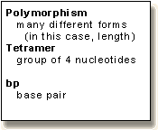

Blackett Family DNA Activity 2What is a Short Tandem Repeat Polymorphism (STR)?STR PolymorphismsMost of our DNA is identical to DNA of others. However, there are inherited regions of our DNA that can vary from person to person. Variations in DNA sequence between individuals are termed "polymorphisms". As we will discover in this activity, sequences with the highest degree of polymorphism are very useful for DNA analysis in forensics cases and paternity testing. This activity is based on analyzing the inheritance of a class of DNA polymorphisms known as "Short Tandem Repeats", or simply STRs. STRs are short sequences of DNA, normally of length 2-5 base pairs, that are repeated numerous times in a head-tail manner, i.e. the 16 bp sequence of "gatagatagatagata" would represent 4 head-tail copies of the tetramer "gata". The polymorphisms in STRs are due to the different number of copies of the repeat element that can occur in a population of individuals. D7S280D7S280 is one of the 13 core CODIS STR genetic loci. This DNA is found on human chromosome 7. The DNA sequence of a representative allele of this locus is shown below. This sequence comes from GenBank, a public DNA database. The tetrameric repeat sequence of D7S280 is "gata". Different alleles of this locus have from 6 to 15 tandem repeats of the "gata" sequence. How many tetrameric repeats are present in the DNA sequence shown below? Notice that one of the tetrameric sequences is "gaca", rather than "gata". 1 aatttttgta ttttttttag agacggggtt tcaccatgtt ggtcaggctg actatggagt 61 tattttaagg ttaatatata taaagggtat gatagaacac ttgtcatagt ttagaacgaa 121 ctaacgatag atagatagat agatagatag atagatagat agatagatag atagacagat 181 tgatagtttt tttttatctc actaaatagt ctatagtaaa catttaatta ccaatatttg 241 gtgcaattct gtcaatgagg ataaatgtgg aatcgttata attcttaaga atatatattc 301 cctctgagtt tttgatacct cagattttaa ggcc
Introduction: Overview | STR P | CODIS | Analysis | Inheritance | Frequency Calc.
Activities : Pedigree | Collect data | Paternity testing | Missing person | RCMP freq. calc.
University of Arizona October 27, 2000 hallick@email.arizona.edu http://www.biology.arizona.edu All contents copyright © 1996-2000. All rights reserved. Credits |